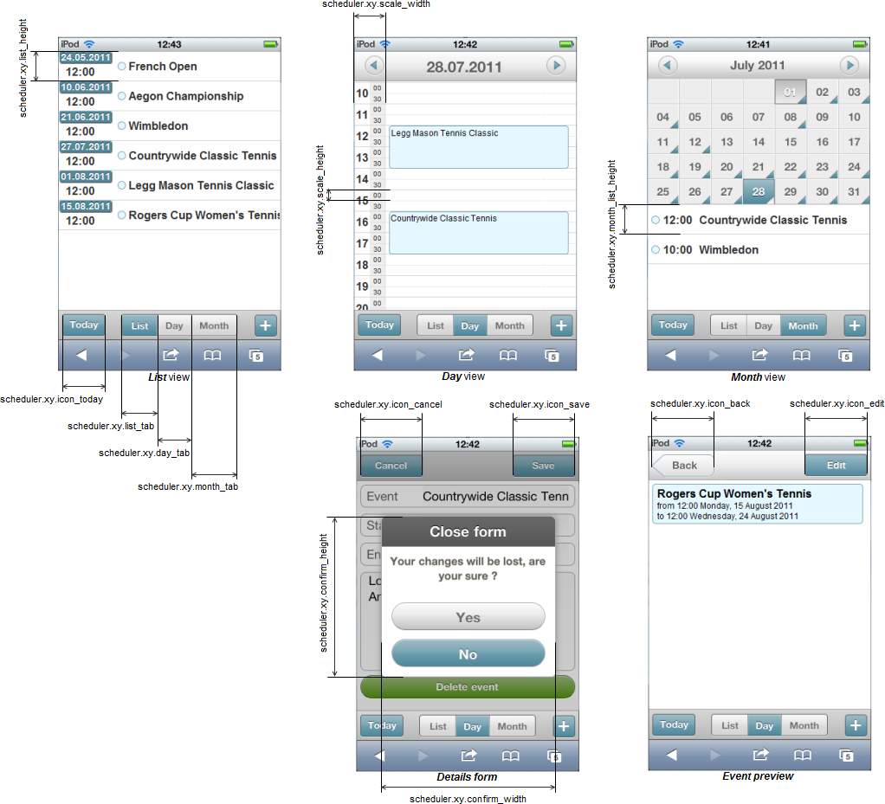

Sizes of elements
Common information
In the scheduler you are allowed to configure formats, using in scheduler's dates, and elements' sizes.
To set the desired option, just write it as it's stated in this documentation. Beware, configuration options should go before the code line with scheduler initialization.
scheduler.xy.confirm_height = 300; scheduler.xy.confirm_width = 300; //configuration options should go before scheduler's constructor dhx.ui({ view: "scheduler", id: "scheduler" }); $$("scheduler").load("../scheduler/mobile.xml","scheduler");
Dimension configuration
- scheduler.xy.confirm_height - (integer) the height of the confirm window (by default, 231)
- scheduler.xy.confirm_width - (integer) the width of the confirm window (by default, 250)
- scheduler.xy.scale_width - (integer) the total width of the hour and minute columns in the 'day' view. The width is divided equally between the columns (by default, 45)
- scheduler.xy.scale_height - (integer) the width of a row in the 'day' view (by default, 15)
- scheduler.xy.list_tab - (integer) the width of the 'List' tab in the bottom tab bar (by default,54)
- scheduler.xy.day_tab - (integer) the width of the 'Day' tab in the bottom tab bar (by default,54)
- scheduler.xy.month_tab - (integer) the width of the 'Month' tab in the bottom tab bar(by default,68)
- scheduler.xy.icon_today - (integer) the width of the button 'Today' in the bottom tab bar(by default,72)
- scheduler.xy.icon_save - (integer) the width of the button 'Save' (by default,100)
- scheduler.xy.icon_cancel - (integer) the width of the button 'Cancel'(by default,100)
- scheduler.xy.icon_edit - (integer) the width of the 'Edit' button (by default,100)
- scheduler.xy.icon_back - (integer) the width of the 'Back' button (by default,100)
- scheduler.xy.list_height - (integer) the height of a row in the 'list' view (by default,42)
- scheduler.xy.month_list_height - (integer) the height of a row in the 'month' view (by default,42)
